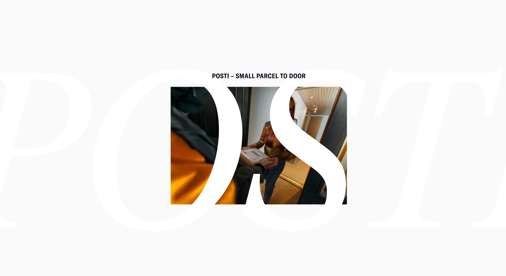
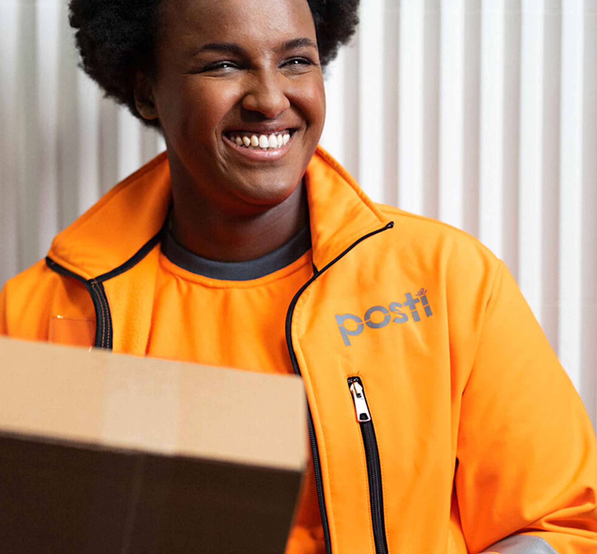
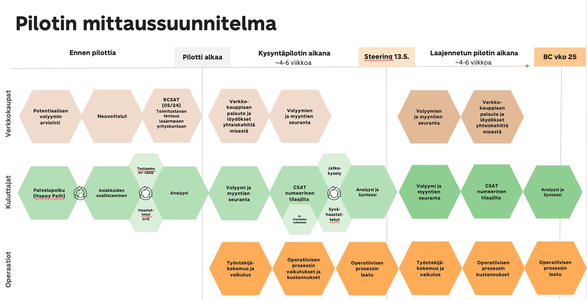
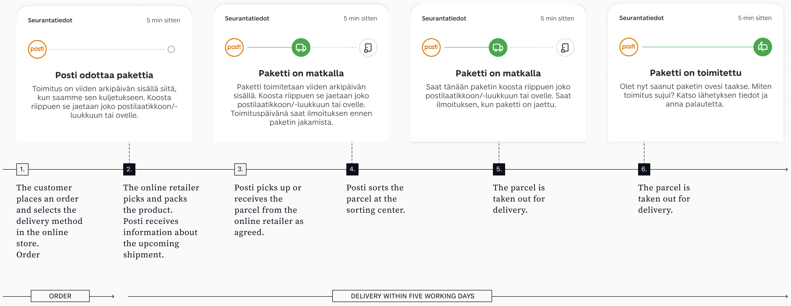
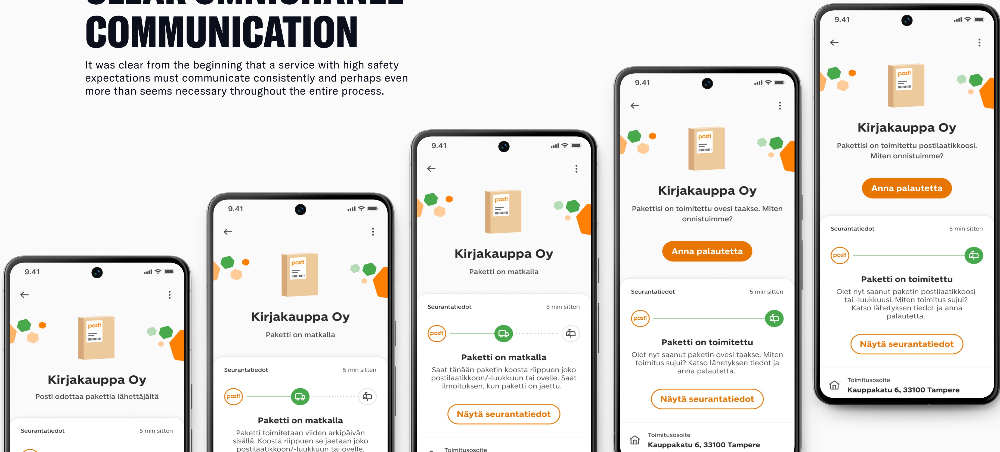
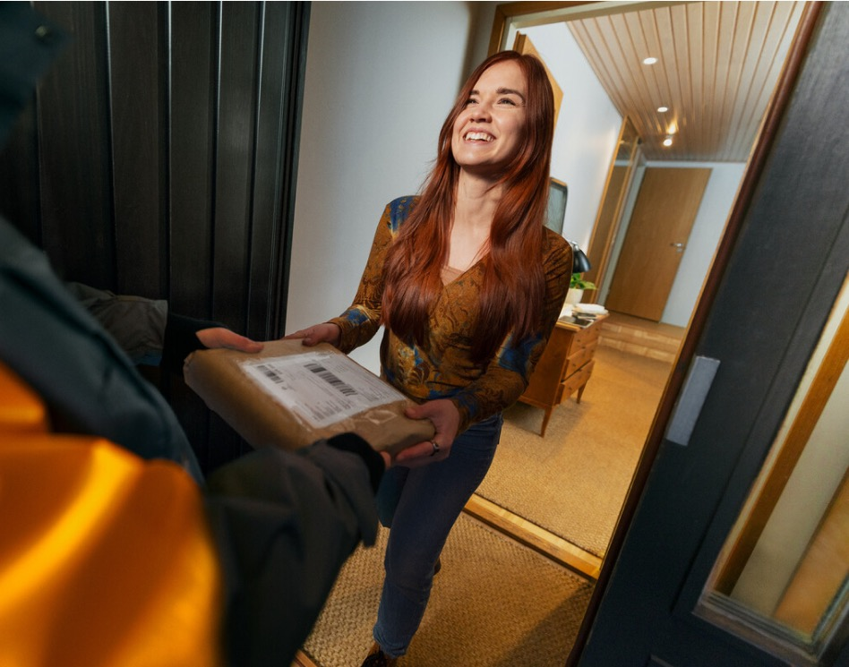
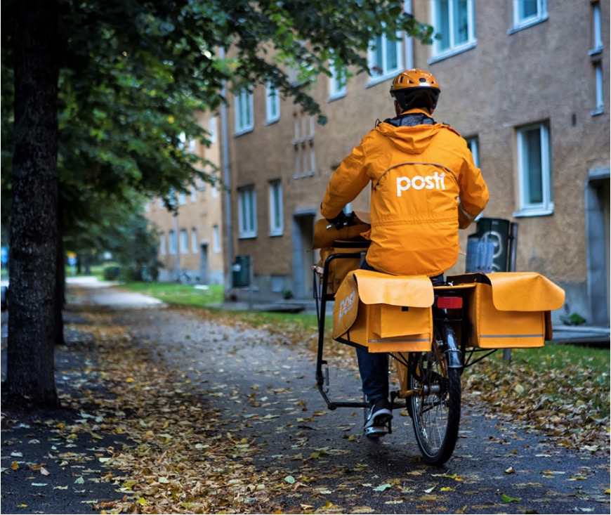

Posti is offering a new way to receive smaller parcels by the doorstep. The new Small Parcel to Door is delivered by the mail carrier to the mailbox, mail slot or behind the door.
Posti developed and piloted a new delivery method, Paketti oven taakse (now rebranded as Pikkupaketti ovelle), in response to the growing demand from consumers and online retailers for more flexible, affordable, and convenient delivery options.
The service allows small parcels to be delivered directly to the customer’s doorstep as part of Posti’s regular daytime delivery, without the recipient needing to be at home.
It fills the gap between parcel-lockers and traditional home deliveries – offering a lighter, faster, and more affordable alternative.
The work extended across early customer journey mapping to prototyping and testing, combining research, co-creation, and strategic design. In my role as Service designer I planned and conducted all the customer experience related tasks.
During the pilot of the new delivery method, I designed the measurement framework and led the engagement of both consumers and business clients who chose to use the service.
The development process was highly customer-driven, combining qualitative and quantitative research methods. It included 28 consumer interviews, a pilot survey with 45 respondents, two large-scale Testaamo surveys reaching over 1,900 participants, seven interviews with online retailers, and more than 50 co-creation sessions with retail partners.
Insights from 11 employee surveys and 7 field observation rounds added valuable operational perspectives, ensuring the service was refined and validated based on real user experience.

The customer journey of the Pikkupaketti ovelle delivery service from online purchase to final doorstep delivery. It shows each step of the process and how customers are kept informed through OmaPosti, email, and text message notifications.

It was clear from the beginning that a service with high safety expectations must communicate consistently and perhaps even more than seems necessary throughout the entire process.

Results and business impact from the pilot.

“The best thing ever is not having to be on duty when someone comes to your door.”
Customer feedback from
the delivery pilot
“There can be any amount of new parcel volume, no effect for my own work. It will be great if there is more to deliver.”
Posti employee

“It’s just a regular parcel. Sometimes delivery is little difficult due to its size because we have to sort it with other mail together and carry it along with other mails.”
Posti employee